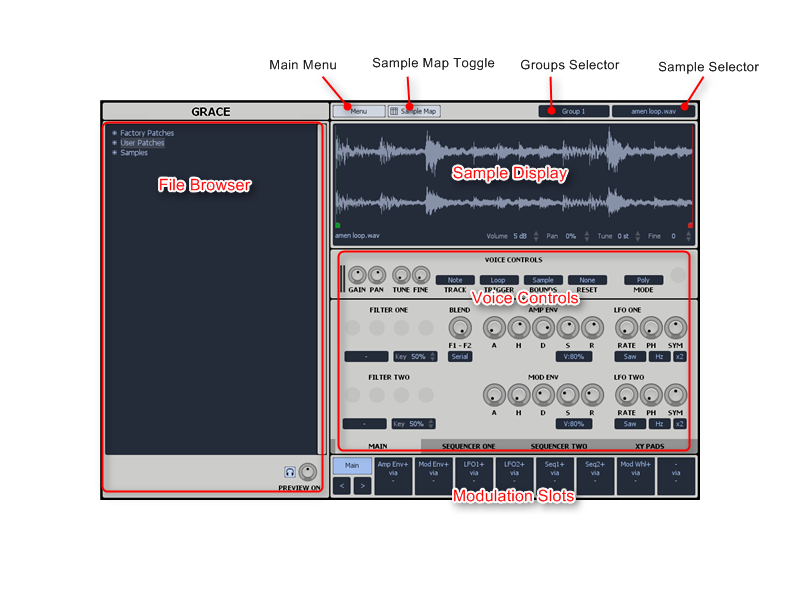
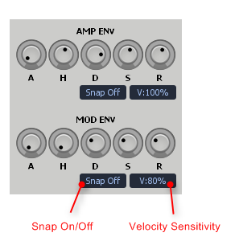
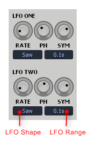
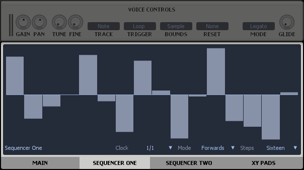
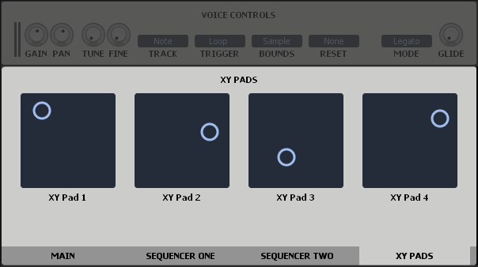
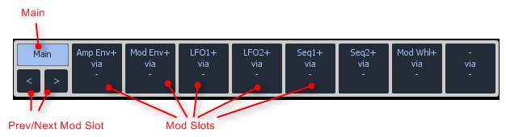
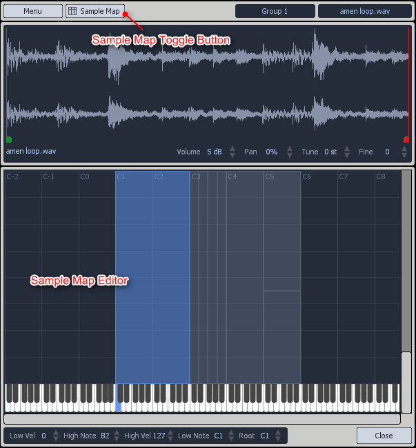

Thank you for purchasing Grace!
Grace is a VST Plugin Sampler. It's ideal for playing melodic samples. Pianos, keys, strings etc. Creative producers and musicians will find a host of other uses as well. Grace's main goal is to make using original samples in your music as simple as possible.
I hope you enjoy using Grace! Please do not hesitate to get in touch via the support forum or email if you have any questions.
Yours Sincerely
Shannon Oram
One Small Clue
shannon@onesmallclue.com
A huge thanks to everyone who's helped with Grace's development in one way or another.
- Andy Brader
- Damien Sutton
- Yann SNK
- Juanjo Cotado
- Chris Holmes
- Hugo Vinagre
- Lowkey
- Biasior Andrea
- Goran Podrugovic (G-Roove)
- Joseph
- Tooshka
- Lilly
VST is a trademark of Steinberg Media Technologies GmbH
1) Visit www.onesmallclue.com/grace.php
2) Download and run the installer.
If Grace doesn't show in your DAW or VST host after installing. Try:
The installer will place files into two locations. Your VST plugin directory and a data directory. The data directory can be specified when running the installer. The default location is:
C:\ProgramData\One Small Clue\Grace
The data directory contains files essential to Grace and Grace will not run properly without it.
The installer will store the installation paths in the Windows registry. These are used by the Grace installer when running updates.

Add and Remove items from the file browser via context menu. (Right click anywhere in the browser.)
The sample display shows the currently selected sample.
The sample markers (sample start, sample end, loop start, loop end) can all be adjusted by dragging.
There are a number of sample playback controls under the sample display.
Volume: Adjust volume of sample.
Pan: Adjust stereo balance of sample.
Tune: Adjust pitch of sample in semitone steps.
Fine: Adjust pitch of sample by +/- 100 cents.
The voice controls are split over two panels. The voice controls adjust sample playback. All voice control settings are applied to all samples in the key group.
Gain: Adjust volume of key group.
Pan: Adjust stereo balance of key group.
Tune: Adjust pitch of key group in semitone steps.
Fine: Adjust pitch of key group by +/- 100 cents.
Track: controls how and when a sample is re-pitched.
Trigger: Turns looping on or off.
Bounds: Controls where the sample loops.
Looping using SAMPLE bounds is useful when modulating the sample start and end markers to produce "glitchy" sounds.
Reset: When set to LFO 1 or LFO 2, the sample playback position will be reset to the beginning in sync with the LFO source. This is useful for doing tempo synced drum roll type sounds.
Mode: The voice mode selector.
Glide: Controls the pitch slew rate when using MONO or LEGATO voice modes.
Grace features two flexible filter slots. Each filter slot can load one of several different filter types. The two filters can be routed in a serial or parallel configuration.
Filter Type Selector: Choose the type of filter.
Filter Key Follow: Controls how much the filter frequency will track the MIDI Input.
Filter Blend: When the knob is fully CCW only FILTER ONE will heard at the output. When the knob is fully CW only FILTER TWO will be heard at the output. In between values allow for the two filters to be mixed together.
Filter Routing:
BLEND will control the balance of the two filters in both FILTER ROUTING modes. Ensure the BLEND knob is fully CW for the classic serial mode filter routing. Other values will allow some of filter one to be heard in the output.
Grace has two clasic AHDSR envelopes. The AMP ENVELOPE is always routed to the voice amplitude (volume). The MOD ENVELOPE is freely assignable to any destination via the modulation matrix.

A: Attack envelope time.
H: Hold envelope time.
D: Decay envelope time.
S: Sustain envelope time.
R: Release envelope time.
Snap On/Off: SNAP ON envelopes have an instantaneous minimum attack time. It's often used with drum samples when it's important to preserve the initial attack transient.
SNAP OFF envelopes will always have smooth attack, decay and release stages. This prevents clicks when envelopes open and close too quickly. This is the default behaviour and recommended for most situations.
Velocity Sensitivity: Controls how much the MIDI velocity input level affects the amplitude of the envelope. At 0% the envelope will always rise to the full envelope value. At 100% the envelope will be scaled by the velocity value. Lower velocity values will trigger correspondingly smaller envelope signals.
Grace has two Low Frequency Oscillators (LFO) with the usual selection of triangle, square and ramp wave shapes. There are some more exotic selections as well.

LFO Shape: Selects the LFO waveform shape. The function of the three LFO knobs will vary depending on the LFO shape.
LFO Range: Select the LFO timing range.
The three LFO knobs are RATE, PH (phase) and SYM (symmetry) when using the periodic waveform shapes.
The three LFO knobs are RATE, % (chance of change) and FLUX (amount of change).
The three LFO knobs are RATE, BIAS and BEND.
These selections are not regular LFO shapes in the traditional sense. They are based on Attack-Decay envelopes commonly found in modular synthesisers.
Attack-Decay and Attack-Release will trigger once at the beginning of a note then stop. They are not true LFOs because they do not oscillate. They are included here because it's sometime useful to have an extra envelope.
Attack-Decay-Cycle will trigger at the beginning of the note and continue cycling like a regular LFO. This shape is very similar to the Triange LFO shape but it reacts different when it's controls are modulated.
Grace also features two step sequencers for maximum modulation possibilities!

Clock: Controls the speed of the sequencer.
Mode: Controls the direction of the sequencer.
Steps: Sets the number of steps in a sequence.
A sequencer context menu has commands to RESET or RANDOMISE the steps.
The XY Pads provide another modulation source similar to the Mod Envelope or the LFOs. The XY Pads can modulate multiple parameters at once using the Modulation Matrix.
Most commonly the XY Pads will be linked to your MIDI controller knobs. They provide an important interface point between your MIDI controller and Grace's parameters.

Right click an XY Pad to show the context menu with commands for MIDI Learn etc.
(Details about the individual filter types goes here!)
The Modulation Matrix routes signals from the modulation sources (LFOs, Envelopes, XY Pads, MIDI Input etc) to Grace's parameters. It is the heart of Grace's modulation system.

Main: Modulation Matrix editing is disabled when the MAIN button is selected (as shown in the image above).
Mod Shots: Grace features 8 MOD SLOTS. Each MOD SLOT provides a way to route one modulation source to multiple destinations.
Prev/Next Mod Slot: These buttons select the previous or next MOD SLOT. Off course you don't have to use these buttons. You may simply click on the desired MOD SLOT to select it.

Step 1 Select a MOD SLOT

Step 2 Locate the parameter you would like to modulate. Filter One FREQ in this case.
Step 3 Hold the ALT key while using the adjust the knob. You will see the modulation depth indicator advance around the knob.

Step 4 Select the MAIN modulation button. Notice the modulation depth indicator around the FREQ knob changes color. It now shows the maximum modulation depth of all modulation sources combined. (A parameter can be modulated by multiple modulation sources.)
Samples, which are audio files, are made playable by creating Regions. Regions are mapped to a location on a keyboard. Each region contains 1 sample.

One or more sample files may be dropped on the mapping display to add more sample regions. Audio samples can dragged from Grace's browser, Windows' file explore or from within some hosts. (Reaper, Cubase and many others support audio being dragged directly from the project timeline to VST Plugins.)
Hotkey support is fairly limited at this time and will slowly improve in future updates.
Up/Down/Left/Right: Navigate the browser.
Enter: Load selected item in browser.